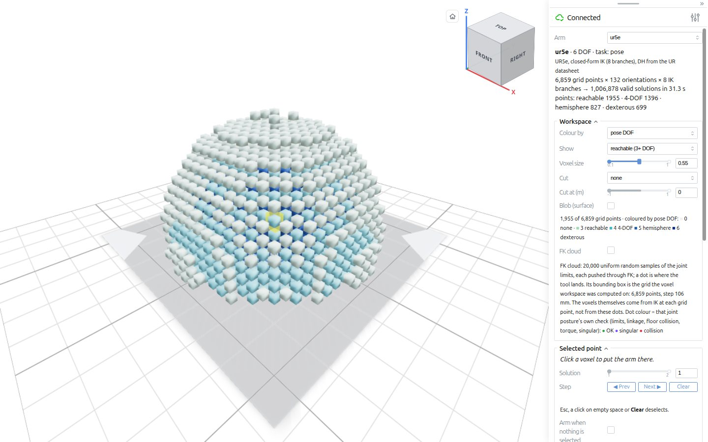
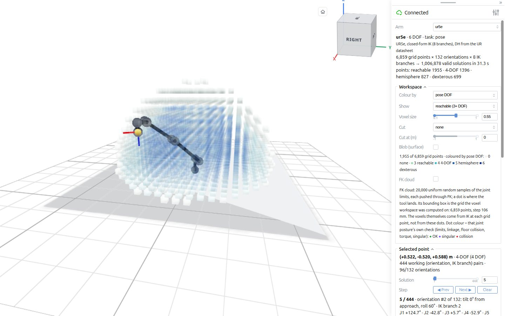
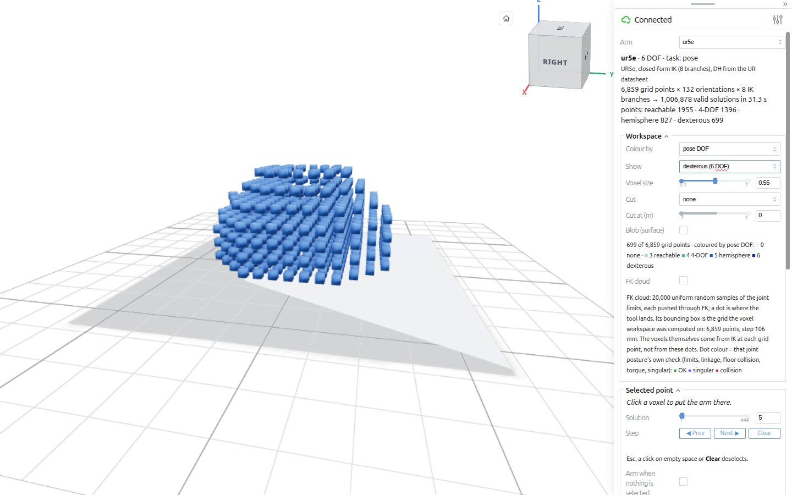
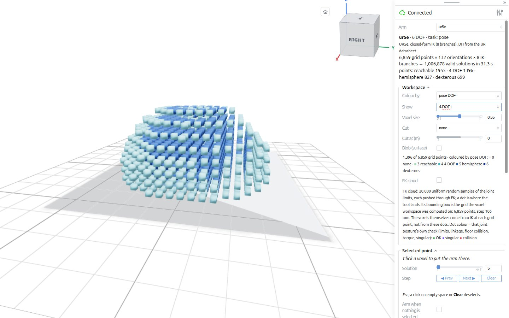
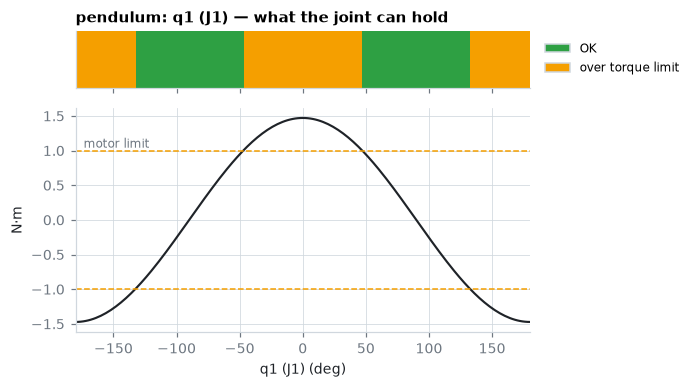
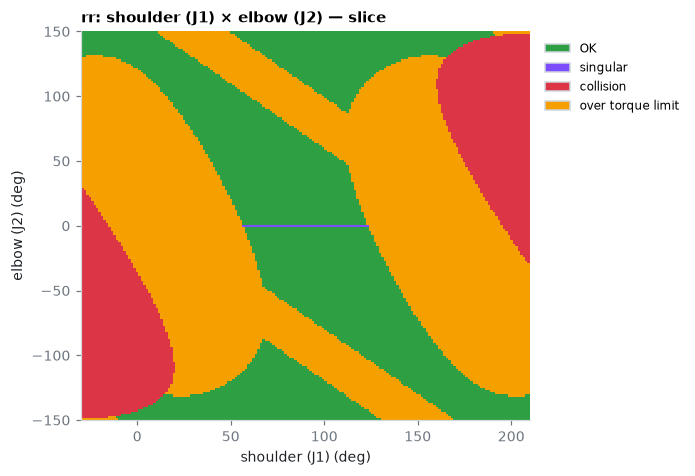
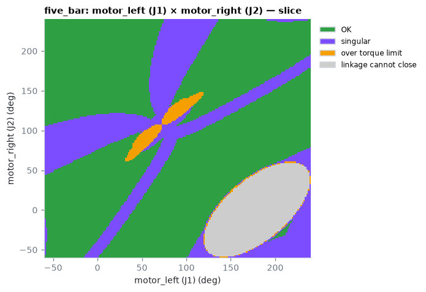
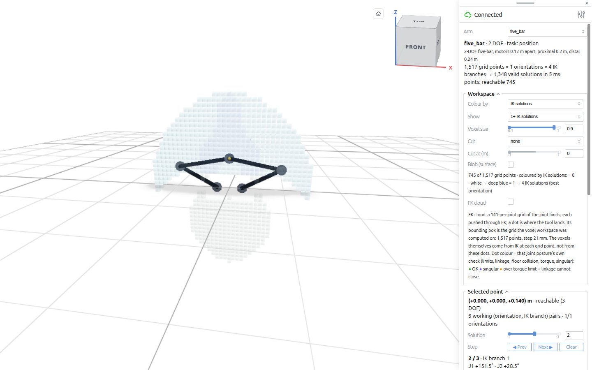
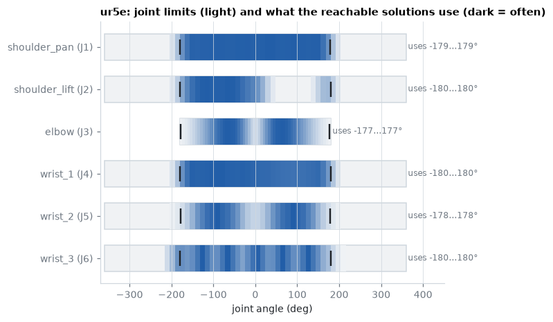
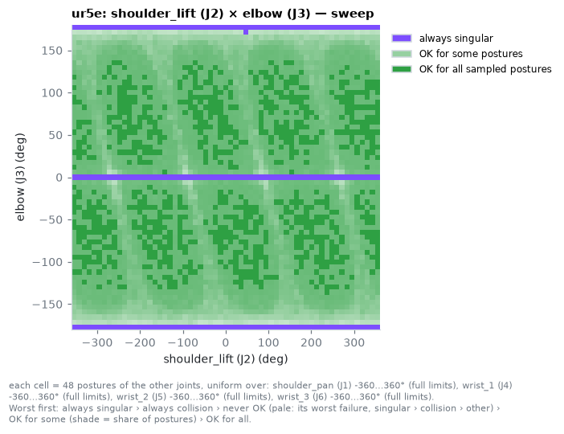

robot_reach
Where can this arm go, and how well? Kinematics in (FK and IK, or a URDF / RobotDescription), workspace out: Cartesian and joint space, for any number of joints.
BAM Reach v2 · numpy + robot_msgs at runtime, viser to look · 205733d · built 2026-11-23 · source
uv run --project /home/bam/robot_reach --extra viz python -m robot_reach examplesimport robot_reach as rr
from robot_reach.robots import ur5e
result = rr.analyze(ur5e(), floor_z=0.0) # FK cloud + reach map (every IK branch) + joint maps + joint ranges
result.save("out/ur5e") # the result log: npz + result.json, no pickle
rr.load("out/ur5e").display() # viser; clicks recompute live in PythonHow it works: kinematics is the centre
- Two directions, used together. Forward: sample joints, run FK. That works for any DOF, even a pendulum whose workspace is a circle no grid would hit, and it bounds the grid so nobody guesses an extent. Inverse: a grid × one shared orientation set (22 approach directions × 6 rolls), IK at every target, every branch kept.
- Levels count pose DOF. 3 reachable · 4 straight down at any yaw · 5 any approach in the hemisphere · 6 every orientation. Four masks over one map.
- One vocabulary of codes for every picture, joint space and Cartesian alike: why a posture or a target fails.
- Compute once, look any time. The result log is plain arrays; viser, a notebook or another package reads the same numbers. In the viewer the Python backend recomputes on demand: Compute box maps a dragged box finer, Drop POI checks every orientation at one point, Jog shows the live code and torque.
Levels 3 · reachable4 · 4-DOF5 · hemisphere6 · dexterous
Codes OKno IK solutionoutside joint limitssingularcollisionover torque limitFK(IK) mismatchlinkage cannot close
The viewer






Any DOF, one call
The same rr.analyze(arm) on five arms. Numbers from the saved results that the viewer above loads.
| Arm | DOF | Task | Grid | IK branches | OK solutions | Points by level | Compute |
|---|---|---|---|---|---|---|---|
| 1-DOF pendulum | 1 | position | — (workspace is a curve: the FK cloud) | 1 | — | — | 0.1 s |
| 2-DOF RR | 2 | position | 1,476 | 2 | 516 | reachable 368 | 0.1 s |
| 2-DOF five-bar | 2 | position | 1,517 | 4 | 1,348 | reachable 745 | 0.1 s |
| 3-DOF shoulder | 3 | position | 5,776 | 4 | 2,548 | reachable 1,056 | 1.5 s |
| 6-DOF UR5e | 6 | pose | 6,859 × 132 orientations | 8 | 1,006,878 | reachable 559 · 4-DOF 569 · hemisphere 128 · dexterous 699 | 39.0 s |








Use cases
Pick from a conveyor belt
Which points over the belt can be picked straight down at any yaw, and which from any approach? Intersect a Box with workspace("four_dof"), then map just that box finer.
Worked example §5: UR5e, belt box 0.35–0.85 m out: 4-DOF on 98.5 % of it, hemisphere 66 %, dexterous 51 %.
Sample valid targets
Draw test or training targets only from a workspace you trust, with every IK branch that reaches them already solved and checked.
§4: workspace("hemisphere"), solutions(p), FK round trip 7e-8 m over 264 solutions.
Any robot from its description
A URDF or a RobotDescription in; every kinematic chain found and analysed, numeric multi-seed IK when there is no closed form.
§6: a 3-DOF URDF, 4 distinct IK branches at one target; python -m robot_reach urdf robot.urdf.
Place a robot in a cell
Draw its reach map under the robot's frame in someone else's viser scene, so it moves when the robot is placed.
§8: add_reach_map(server, m, parent_frame="/cell/robot_1"), viser 1.0.16 and 1.1.1.
Choose a mechanism and its limits
Joint maps say which postures fail and why (limit, singular, collision, torque, cannot close); joint ranges show what the work actually uses.
The five-bar's cannot-close island; the pendulum's torque line.
A ready / rest pose
Footprint, clearance over the belt and holding power per pose; solve a use case to a Pareto set and a robot_msgs NamedPose.
python -m robot_reach rest shoulder3 --solve (README).
API (what exists today)
Kinematics in, workspace out. An arm is its forward kinematics (FK) and inverse kinematics (IK),
passed in as pure batched numpy functions, or built from a URDF / RobotDescription. rr.analyze()
computes once where the arm can go and which postures work, with one status code for every "why not".
The result is plain arrays on disk; the viser viewer shows it and recomputes on demand in its Python
backend; anything downstream reads the same arrays.
This page describes the API as it is on main (2026-11-23). The worked example runs every call
below: notebooks/reach_worked_example.py (executed copy:
reach_worked_example.ipynb). What a typed downstream API could look like next is in
docs/proposals/ and section G of reports/reach-proposals-2026-11-23.html; those are proposals, not code.
RobotDescription ─to_urdf_string()─┐
URDF file / XML ───────────────────┼─> arm_from_urdf ─┐
your fk(q), ik(T) ─────────────────┴──────────────────┴─> Arm ──> analyze() ──> ReachResult ──save()──> folder
│ │
display() (viser) <────────┤ load() <─────┘
add_reach_map(server) <────┤
downstream: ReachMap arrays┘ (levels, workspace, solutions)
1. In: an Arm
import robot_reach as rr
arm = rr.Arm(
name="my_arm",
joint_names=("q1", "q2", "q3"),
lower=(-3.0, -1.0, -2.5), # rad (m for prismatic)
upper=(3.0, 2.0, 2.5),
fk=my_fk, # (N, dof) -> (N, 4, 4), or ((N, 4, 4), ok (N,)) when FK can fail
ik=my_ik, # (N, 4, 4) -> (q (N, S, dof), code (N, S)): EVERY branch, a Code each
task="position", # "pose" (6-DOF) | "axis" (5-DOF, roll free) | "position"
)
| Field | Shape / type | Meaning |
|---|---|---|
fk |
(N, dof) -> (N, 4, 4) |
base->tool pose; the tool's +Z is the approach axis |
ik |
(N, 4, 4) -> (q (N, S, dof), code (N, S)) |
all S branches (2 for an elbow, 8 for a UR); unused slot = Code.PAD |
task |
"pose" \| "axis" \| "position" |
what part of a target the arm is asked to match; no false 6-DOF claim |
skeleton |
(N, dof) -> (N, K, 3) |
points to draw the arm |
mass_points, masses, torque_limits |
(N, dof) -> (N, M, 3), kg, N·m |
static gravity torque vs motor limit |
collision |
(N, dof) -> (N,) bool |
None = not checked (never assumed free) |
singular |
(N, dof) -> (N,) bool |
a mechanism's own singularity test (a five-bar's) |
plane |
point, normal | a planar arm; grids collapse onto it |
meshes, mesh_poses |
ArmMesh parts, (N, dof) -> (N, M, 4, 4) |
posed geometry for clearance and footprint |
velocity_limits, acceleration_limits, friction |
per joint | readiness (time to a pose) and the limp rest |
meta["home"], meta["factory"] |
home posture; the recipe load() uses to rebuild the arm |
Convenience: rr.Arm.from_scalar(name, joints, lower, upper, fk, ik) wraps one-pose-at-a-time
functions (fk(q) -> 4x4, ik(T) -> [q, ...]).
Methods every consumer can call on an Arm: forward(q) -> (T, ok), inverse(T) -> (q, code)
(both chunked), check(q, floor_z=, singular_tol=) -> code, jacobian(q) (N, 6, dof),
manipulability(q), gravity_torque(q), surface(q), within_limits(q), dof, limits.
The library re-checks every IK claim: joint limits (trying the ±2π twin of revolute joints), the FK round trip, duplicate branches, collision, torque and singularity. A lazy solver cannot overclaim.
Built-in arms (robot_reach.robots)
pendulum() 1-DOF · rr() 2-DOF · five_bar() 2-DOF closed chain · shoulder3() 3-DOF ·
ur5e() 6-DOF closed-form IK, 8 branches.
From a URDF or a RobotDescription (robot_reach.urdf)
from robot_reach.urdf import analyze_chains, arm_from_description, arm_from_urdf, chains
chains(desc) # [(base, tip, dof), ...]; desc = path, URDF XML, or a description
arm = arm_from_urdf("/abs/robot.urdf", "tool0")
arm = arm_from_description(desc, "tool0") # duck-typed: only calls desc.to_urdf_string()
results = analyze_chains(desc, floor_z=0.0) # {"tool0 (6 DOF)": ReachResult, ...}
FK from stdlib XML + numpy (revolute, continuous, prismatic, mimic). With no analytic IK, a batched
damped-least-squares IK runs from 8 seeds per target and merges duplicates, so several distinct
branches still come back (the worked example's 3-DOF URDF: 4 branches at one target). Pass ik= when
you have a closed form; it is several times faster.
2. Compute: analyze()
result = rr.analyze(arm, floor_z=0.0) # step=, box=, orientations=, n_fk=, joint_axes=, singular_tol=, seed=
- FK cloud — sample joints, run FK, classify each sample. Works for any DOF (a pendulum's workspace is a circle no grid would hit) and bounds the grid, so nobody guesses an extent.
- Reach map — a grid inside that box × one shared
OrientationSet(22 approach directions × 6 rolls = 132), IK at every target, every branch kept with its final code. - Joint maps — the 2R picture for joint pairs:
slice(others at home) andsweep(others sampled; value = fraction that works). 1-DOF: a line with its gravity torque. - Joint ranges — limits vs the range the working solutions actually use.
Lower-level pieces are public too: rr.fk_cloud, rr.reach_map(arm, positions, orientations),
rr.joint_map, rr.joint_ranges, rr.Box, rr.OrientationSet.sample(approach=...).
3. Store and reload: the result log
folder = result.save("out/ur5e") # result.json + reach.reach.npz + cloud.npz + joint_maps.npz
result = rr.load("out/ur5e") # the arm is rebuilt from meta["factory"] when it has one
result.summary() # plain dict: counts, codes, levels, timings
Pickle-free and versioned (schema strings robot_reach.result.vN / robot_reach.reach_map.vN, bumped when the
layout changes; the examples CLI recomputes a result saved under an older one): readable without the code.
4. Out: what a downstream consumer reads
ReachResult holds reach (a ReachMap, or None for a curve workspace), joint_maps, ranges,
cloud_q / cloud_p / cloud_code, config, timings and the live arm.
ReachMap — the Cartesian answer:
| Member | Shape | Meaning |
|---|---|---|
positions |
(P, 3) | grid points, arm base frame, m |
orientations.R |
(O, 3, 3) | one orientation set shared by every point |
code |
(P, O, S) int8 | final Code per IK branch |
sol_index, sol_q |
(K,), (K, dof) | every OK branch: flat index into (P, O, S), and its joints |
n_solutions |
(P, O) | count of OK branches |
valid_mask, reach_scores |
(P, O), (P,) | bam_reach v1 field names, kept |
joint_solutions |
(P, O, dof) | first OK branch per pose, NaN if none (v1's shape; robot_trajectories duck-types it) |
levels(threshold=1.0) |
(P,) | pose DOF the arm controls there: 0, 3, 4, 5, 6 |
workspace(kind, threshold=1.0) |
(P,) bool | reachable · four_dof · hemisphere · dexterous |
score(kind) |
(P,) | fraction of that kind's orientations reachable |
solutions(p) |
list | every OK (orientation index, branch index, q) at point p |
target(p, o) |
(4, 4) | the pose a solution reaches |
code_counts() |
dict | branches per code |
Levels: 3 reachable (some orientation works) · 4 straight-down approach at every yaw (top-down picking) · 5 hemisphere (every approach within 90° of the reference, every roll) · 6 dexterous (every sampled orientation). All four are masks over one map.
Code (rr.Code, rr.CODE_LABELS, rr.CODE_COLORS) — one vocabulary for every view:
OK, NO_SOLUTION, JOINT_LIMIT, SINGULAR, COLLISION, TORQUE_LIMIT, FK_MISMATCH, FK_FAIL
(linkage cannot close), PAD (unused slot).
Typical downstream queries today are a few lines of numpy over these arrays (worked example §4-5):
m = rr.load("out/ur5e").reach
hemi = np.flatnonzero(m.workspace("hemisphere")) # sample a workspace
p = np.random.default_rng(0).choice(hemi)
for o, branch, q in m.solutions(p): ... # every IK branch there
belt = rr.Box(center=(0.6, 0, 0.15), size=(0.5, 0.8, 0.2))
over_belt = belt.contains(m.positions) & m.workspace("four_dof") # top-down pickable over the belt
fine = rr.reach_map(arm, belt.grid(0.05), rr.OrientationSet.sample()) # finer map of one volume
There is no ReachMap.sample() or typed query object yet; that is what the proposals are about.
5. Look: viser
result.display() # blocks; the viewer recomputes live in Python
from robot_reach.overlay import add_reach_map
overlay = add_reach_map(server, result.reach, parent_frame="/cell/robot_1") # into anyone's viser scene
overlay.kind = "four_dof"; overlay.visible = False
overlay.py imports nothing from viser and works on viser 1.0.16 and 1.1.1. CLI:
python -m robot_reach examples | urdf <path> | rest <spec> [--solve].
In the viewer: click a voxel to put the arm there, Next ▶ walks every (orientation, IK branch); Cut, Blob (voxel surface that keeps holes), FK cloud, Jog sliders with live code and torque, Ask here → Compute box (finer map of a dragged box) and Drop POI (every orientation at one point).
6. Rest and ready poses (robot_reach.rest, robot_reach.goals)
RestStudy(arm, Scene, motors, gates, criteria).measure(q) → footprint, clearance over a belt and
holding power; goals.solve(study, PoseGoal(...)) → gates, Pareto set, pick, and a NamedPose-ready
record. See the README's "Find a good ready/rest pose" section.
robot_msgs: types used and produced
robot_reach's core (FK, IK, the reach map, the result log) speaks numpy arrays: 4×4 homogeneous poses and joint vectors in radians, SI. It is the shared vocabulary only at these seams today:
| robot_msgs name | Direction | Where | What for |
|---|---|---|---|
manipulation.NamedPose |
produced | goals.to_named_pose(record) |
a solved rest/ready pose as a saved, digest-stamped joint pose |
manipulation.named_poses_from_json (→ NamedPose) |
consumed | rest.named_poses(file, arm), rest --poses |
read a description's named-poses file and check each pose against the arm |
geometry.rotations.quat_from_matrix, xyzw_to_wxyz |
used | viewer.py, rest_viewer.py |
rotation matrix → viser's wxyz quaternion for posing meshes |
Not robot_msgs, but the kinematics input: RobotDescription (bam_robot_descriptions, in bam_ws) is
duck-typed through to_urdf_string(); robot_reach never imports it.
A consumer that wants messages for a reach solution builds them from the arrays (worked example §7):
robot_msgs.geometry.Pose.from_matrix(m.target(p, o)), robot_msgs.sensor.JointState(name=m.joint_names,
position=q), robot_msgs.manipulation.NamedPose(...). robot_reach does not return Pose, JointState or
a workspace message itself today; a typed workspace hand-off is in the proposals.
Run it
uv run --project /home/bam/robot_reach --extra viz python /home/bam/robot_reach/notebooks/reach_worked_example.py
Worked example, executed
Every cell below ran as shown; the outputs are the real ones. Download the notebook or the script (the same cells). It runs against a local checkout (robot_reach and robot_msgs are not on PyPI yet), so it is a notebook, not a Colab link.
uv run --project /home/bam/robot_reach --extra viz python /home/bam/robot_reach/notebooks/reach_worked_example.pyimport time
from pathlib import Path
import numpy as np
import robot_reach as rr
from robot_reach import Code
np.set_printoptions(precision=3, suppress=True)
REPO = Path("/home/bam/robot_reach")
print("robot_reach exports:", ", ".join(rr.__all__))robot_reach exports: Arm, ArmMesh, Box, Code, CODE_COLORS, CODE_LABELS, FKCloud, JointMap, JointRanges, LEVEL_NAMES, OrientationSet, ReachMap, fk_cloud, joint_map, joint_ranges, reach_map, ReachResult, analyze, load1. An arm is two batched functions
A planar 2R arm (shoulder + elbow, link lengths 0.30 m and 0.25 m). FK maps (N, dof) joint
angles to (N, 4, 4) poses. IK maps (N, 4, 4) targets to every branch, (N, S, dof), with
a Code per branch. Here S = 2: elbow up and elbow down. task="position" says the arm is only
asked to match the position, never a false orientation promise.
L1, L2 = 0.30, 0.25
def fk_2r(q):
"""(N, 2) rad -> (N, 4, 4) base->tool, the arm in the x-z plane."""
a, b = q[:, 0], q[:, 0] + q[:, 1]
T = np.tile(np.eye(4), (len(q), 1, 1))
T[:, 0, 3] = L1 * np.cos(a) + L2 * np.cos(b)
T[:, 2, 3] = L1 * np.sin(a) + L2 * np.sin(b)
return T
def ik_2r(T):
"""(N, 4, 4) -> (q (N, 2, 2), code (N, 2)): both elbow branches, a Code each."""
x, z = T[:, 0, 3], T[:, 2, 3]
c2 = (x**2 + z**2 - L1**2 - L2**2) / (2 * L1 * L2)
reachable = np.abs(c2) <= 1.0
q = np.zeros((len(T), 2, 2))
code = np.where(reachable, int(Code.OK), int(Code.NO_SOLUTION))[:, None].repeat(2, axis=1)
for branch, sign in enumerate((+1.0, -1.0)):
q2 = sign * np.arccos(np.clip(c2, -1.0, 1.0))
q1 = np.arctan2(z, x) - np.arctan2(L2 * np.sin(q2), L1 + L2 * np.cos(q2))
q[:, branch] = np.stack([q1, q2], axis=1)
return q, code.astype(np.int8)
arm = rr.Arm(
name="my_2r",
joint_names=("shoulder", "elbow"),
lower=np.deg2rad([-10.0, -150.0]).tolist(),
upper=np.deg2rad([190.0, 150.0]).tolist(),
fk=fk_2r,
ik=ik_2r,
task="position",
plane=((0.0, 0.0, 0.0), (0.0, 1.0, 0.0)), # a planar arm: grids collapse onto its plane
)
q = np.deg2rad([[30.0, 45.0], [90.0, -60.0]])
T, ok = arm.forward(q)
print("FK tool positions (m):\n", T[:, :3, 3], "ok:", ok)
q_all, codes = arm.inverse(T)
print("IK, every branch (deg):\n", np.rad2deg(q_all))
print("codes:", [[Code(int(c)).name for c in row] for row in codes])
print("manipulability at q:", arm.manipulability(q))FK tool positions (m):
[[0.325 0. 0.391]
[0.217 0. 0.425]] ok: [ True True]
IK, every branch (deg):
[[[ 30. 45. ]
[ 70.687 -45. ]]
[[ 36.009 60. ]
[ 90. -60. ]]]
codes: [['OK', 'OK'], ['OK', 'OK']]
manipulability at q: [0.053 0.065]The library never trusts a solver's OK. arm.check(q) applies the checks it can do itself
(joint limits, the FK round trip, collision, torque, singularity), and the reach map runs the
same checks on every IK branch. Below, a posture outside the shoulder limit and one at the
fully stretched singularity.
probe = np.deg2rad([[30.0, 45.0], [-60.0, 20.0], [60.0, 0.0]])
print([Code(int(c)).name for c in arm.check(probe, singular_tol=0.05)])['OK', 'JOINT_LIMIT', 'OK']2. Analyze it: compute once
rr.analyze() runs four things and returns one ReachResult:
the FK cloud (sample joints, run FK; bounds the grid so nobody guesses an extent),
the reach map (IK at every grid point x orientation, every branch kept),
the joint maps (the 2R picture for joint pairs) and the joint ranges (limits vs what the
working solutions actually use).
t = time.perf_counter()
result = rr.analyze(arm, floor_z=-0.05)
print(f"analyze: {time.perf_counter() - t:.2f} s")
s = result.summary()
print({k: s[k] for k in ("arm", "dof", "task", "fk_samples")})
print("reach:", s["reach"])
print("joint maps:", [(m["axes"], m["mode"], m["ok_fraction"]) for m in s["joint_maps"]])analyze: 0.19 s
{'arm': 'my_2r', 'dof': 2, 'task': 'position', 'fk_samples': 19881}
reach: {'positions': 1312, 'orientations': 1, 'ik_branches': 2, 'targets': 1312, 'ok_solutions': 1016, 'branch_codes': {'OK': 1016, 'NO_SOLUTION': 536, 'JOINT_LIMIT': 822, 'COLLISION': 250}, 'points_by_level': {'3': 616, '4': 0, '5': 0, '6': 0}, 'max_solutions_at_one_pose': 2}
joint maps: [(['shoulder', 'elbow'], 'slice', 0.8205)]The result log is plain files: result.json plus compressed npz, no pickle. A viewer, a report,
this notebook or another package reads the same numbers; nothing recomputes to look.
folder = result.save(REPO / "out" / "notebook_my_2r")
print(sorted(p.name for p in folder.iterdir()))
again = rr.load(folder, rebuild_arm=False)
print("reloaded positions:", again.reach.n_positions, "| arm rebuilt:", again.arm is not None,
"(a hand-written arm has no factory; the built-ins do)")['cloud.npz', 'joint_maps.npz', 'reach.reach.npz', 'result.json']
reloaded positions: 1312 | arm rebuilt: False (a hand-written arm has no factory; the built-ins do)3. Any DOF: the built-in arms
1-DOF pendulum, 2-DOF RR, 2-DOF five-bar (a closed chain whose FK can fail), 3-DOF shoulder and 6-DOF UR5e. The same call on each. The UR5e (about 20 s) is loaded from its saved result in the next section instead of recomputed here.
from robot_reach.robots import five_bar, pendulum, rr as rr_arm, shoulder3 # noqa: E402
for factory in (pendulum, rr_arm, five_bar, shoulder3):
a = factory()
t = time.perf_counter()
res = rr.analyze(a)
dt = time.perf_counter() - t
r = res.reach
if r is None:
print(f"{a.name:9s} dof={a.dof} no grid (its workspace is a curve: see the FK cloud) {dt:5.2f} s")
continue
lv = r.levels()
print(f"{a.name:9s} dof={a.dof} branches={r.n_branches} grid={r.n_positions:5d} "
f"reachable={(lv >= 3).sum():5d} OK branches={len(r.sol_index):6d} {dt:5.2f} s")pendulum dof=1 no grid (its workspace is a curve: see the FK cloud) 0.01 s
rr dof=2 branches=2 grid= 1476 reachable= 444 OK branches= 592 0.13 s
five_bar dof=2 branches=4 grid= 1517 reachable= 745 OK branches= 1348 0.25 s
shoulder3 dof=3 branches=4 grid= 5776 reachable= 1413 OK branches= 3231 2.68 s4. A downstream consumer: query a saved UR5e map
rr.load() reads the result log and rebuilds the arm from its recorded factory, so the live FK
is back too. The ReachMap is the thing a downstream package reads:
| Call | Shape | Meaning |
|---|---|---|
positions |
(P, 3) | grid points, arm base frame, m |
orientations.R |
(O, 3, 3) | one orientation set shared by every point |
code |
(P, O, S) | final Code per IK branch |
levels() |
(P,) | pose DOF controlled at each point: 0, 3, 4, 5, 6 |
workspace(kind) |
(P,) bool | reachable, four_dof, hemisphere, dexterous |
solutions(p) |
list | every OK (orientation, branch, q) at point p |
target(p, o) |
(4, 4) | the pose a solution reaches |
joint_solutions |
(P, O, dof) | first OK branch per pose (bam_reach v1's field) |
ur = rr.load(REPO / "out" / "ur5e")
m = ur.reach
print(f"{m.arm_name}: {m.n_positions} points x {m.n_orientations} orientations x {m.n_branches} branches")
lv = m.levels()
for level, name in rr.LEVEL_NAMES.items():
print(f" level {level} {name:12s} {(lv == level).sum():5d} points")
print("branch codes:", m.code_counts())ur5e: 6859 points x 132 orientations x 8 branches
level 0 unreachable 4904 points
level 3 reachable 559 points
level 4 4-DOF 569 points
level 5 hemisphere 128 points
level 6 dexterous 699 points
branch codes: {'OK': 1006878, 'NO_SOLUTION': 5168736, 'SINGULAR': 3420, 'COLLISION': 1064070}Sampling a workspace: the points of the hemisphere workspace (every approach within 90 deg of
straight down, every roll), five of them at random. Today this is three lines of numpy over the
map; a .sample() helper is one of the proposals for the next API, not something that exists yet.
rng = np.random.default_rng(0)
hemi = np.flatnonzero(m.workspace("hemisphere"))
picks = rng.choice(hemi, 5, replace=False)
print(f"hemisphere workspace: {len(hemi)} points; five picks (m):\n", m.positions[picks])hemisphere workspace: 827 points; five picks (m):
[[ 0.205 -0.308 0.06 ]
[-0.006 0.326 0.8 ]
[-0.323 0.431 0.06 ]
[-0.218 -0.414 0.694]
[ 0.416 -0.097 0.483]]Every IK branch at one point, and the round-trip check done by hand: FK of each stored solution lands back on its target.
p = int(picks[0])
sols = m.solutions(p)
print(f"point {p} at {m.positions[p]}: {len(sols)} OK (orientation, branch) solutions")
o, b, q_sol = sols[0]
print(f"first: orientation {o}, branch {b}, q (deg) = {np.rad2deg(q_sol)}")
T_fk, _ = ur.arm.forward(np.array([s[2] for s in sols]))
T_target = np.array([m.target(p, s[0]) for s in sols])
print(f"max FK(IK) position error over all {len(sols)}: {np.abs(T_fk[:, :3, 3] - T_target[:, :3, 3]).max():.2e} m")
n_here = m.n_solutions[p][m.n_solutions[p] > 0]
print("orientations here by number of OK IK branches:", {int(k): int((n_here == k).sum()) for k in np.unique(n_here)})point 4093 at [ 0.205 -0.308 0.06 ]: 264 OK (orientation, branch) solutions
first: orientation 0, branch 0, q (deg) = [102.521 -53.139 114.146 28.993 90. 12.521]
max FK(IK) position error over all 264: 6.51e-08 m
orientations here by number of OK IK branches: {2: 48, 4: 42}5. Over a conveyor belt
The use case that motivated the downstream question: which points over the belt can be picked
straight down at any yaw (4-DOF), and which with any approach in the hemisphere? A Box marks
the belt's pick volume in the arm base frame.
belt = rr.Box(center=(0.60, 0.0, 0.15), size=(0.50, 0.80, 0.20)) # x 0.35-0.85 m, z 0.05-0.25 m
inside = belt.contains(m.positions)
for kind in ("reachable", "four_dof", "hemisphere", "dexterous"):
w = m.workspace(kind) & inside
print(f" {kind:10s} {w.sum():3d} of {inside.sum()} grid points over the belt") reachable 70 of 70 grid points over the belt
four_dof 70 of 70 grid points over the belt
hemisphere 42 of 70 grid points over the belt
dexterous 21 of 70 grid points over the beltThe grid step here is the saved map's (about 0.11 m). For a finer look at just that volume, map the box itself: same arm, same orientation set, a 5 cm grid.
t = time.perf_counter()
fine = rr.reach_map(ur.arm, belt.grid(0.05), rr.OrientationSet.sample(), floor_z=0.0)
print(f"belt box at 5 cm: {fine.n_positions} points in {time.perf_counter() - t:.1f} s")
for kind in ("four_dof", "hemisphere", "dexterous"):
print(f" {kind:10s} {fine.workspace(kind).mean():6.1%} of the belt volume")belt box at 5 cm: 935 points in 3.9 s
four_dof 98.5% of the belt volume
hemisphere 66.1% of the belt volume
dexterous 51.0% of the belt volume6. From a URDF or a RobotDescription
FK comes from the URDF (stdlib XML + numpy: revolute, continuous, prismatic, mimic). With no
analytic IK, a batched damped-least-squares IK runs from several seeds and keeps the distinct
branches. A bam RobotDescription goes in through arm_from_description, which only calls its
to_urdf_string(), so robot_reach never imports the description package.
from robot_reach.urdf import analyze_chains, arm_from_description, arm_from_urdf, chains # noqa: E402
URDF = """<robot name="yaw_rr">
<link name="base"/><link name="l1"/><link name="l2"/><link name="l3"/><link name="tool"/>
<joint name="J1" type="revolute"><parent link="base"/><child link="l1"/>
<origin xyz="0 0 0.10"/><axis xyz="0 0 1"/><limit lower="-2.9" upper="2.9" effort="5" velocity="3"/></joint>
<joint name="J2" type="revolute"><parent link="l1"/><child link="l2"/>
<origin xyz="0 0 0"/><axis xyz="0 -1 0"/><limit lower="-0.3" upper="3.4" effort="5" velocity="3"/></joint>
<joint name="J3" type="revolute"><parent link="l2"/><child link="l3"/>
<origin xyz="0.30 0 0"/><axis xyz="0 -1 0"/><limit lower="-2.6" upper="2.6" effort="5" velocity="3"/></joint>
<joint name="tool_fixed" type="fixed"><parent link="l3"/><child link="tool"/><origin xyz="0.25 0 0"/></joint>
</robot>"""
print("chains:", chains(URDF))
urdf_arm = arm_from_urdf(URDF, "tool")
print(urdf_arm.name, urdf_arm.joint_names, "task:", urdf_arm.task)
T, _ = urdf_arm.forward(np.deg2rad([[20.0, 60.0, -60.0]]))
print("FK at (20, 60, -60) deg:", T[0, :3, 3])
q_ik, c_ik = urdf_arm.inverse(T)
good = c_ik[0] == Code.OK
print(f"numeric IK: {good.sum()} distinct OK branches (deg):\n", np.rad2deg(q_ik[0, good]))
class TinyDescription:
"""Stands in for a bam RobotDescription: robot_reach only calls to_urdf_string()."""
def to_urdf_string(self, provenance: bool = True) -> str:
return URDF
t = time.perf_counter()
per_chain = analyze_chains(TinyDescription(), floor_z=0.0)
for label, res in per_chain.items():
lv = res.reach.levels()
print(f"{label}: {res.reach.n_positions} grid points, {(lv >= 3).sum()} reachable, "
f"{time.perf_counter() - t:.1f} s")
print("same arm via arm_from_description:", arm_from_description(TinyDescription(), "tool").joint_names)chains: [('base', 'tool', 3)]
yaw_rr:tool ('J1', 'J2', 'J3') task: position
FK at (20, 60, -60) deg: [0.376 0.137 0.36 ]
numeric IK: 4 distinct OK branches (deg):
[[ 20. 6.009 60. ]
[ 20. 60. -60. ]
[-160. 120. 60. ]
[-160. 173.991 -60. ]]
tool (3 DOF): 2002 grid points, 585 reachable, 4.7 s
same arm via arm_from_description: ('J1', 'J2', 'J3')7. Out to robot_msgs
What crosses a package boundary today. robot_reach's own outputs are numpy arrays and its result log; it hands robot_msgs types at two seams:
NamedPose(robot_msgs.manipulation): the rest-pose solver's pick becomes one (goals.to_named_pose(record)), andrest.named_poses()reads a robot_msgs named-poses JSON.- rotation helpers (
robot_msgs.geometry.rotations.quat_from_matrix,xyzw_to_wxyz): the viewers pose meshes with them.
A consumer that wants messages for a reach solution builds them from the arrays: a 4x4 target is
a Pose, a joint vector is a JointState, a chosen solution is a NamedPose. These three lines
are consumer code, not a robot_reach function (a typed downstream API is in the proposals).
from robot_msgs.geometry import Pose # noqa: E402
from robot_msgs.manipulation import NamedPose, named_poses_from_json, named_poses_to_json # noqa: E402
from robot_msgs.sensor import JointState # noqa: E402
pose = Pose.from_matrix(m.target(p, o))
state = JointState(name=m.joint_names, position=q_sol)
named = NamedPose(name="belt_hover", group="arm", joint_names=m.joint_names, positions=q_sol,
description="A hemisphere-workspace point picked from the UR5e reach map.",
why=f"reach map point {p}, orientation {o}, IK branch {b}")
print(pose)
print(state)
text = named_poses_to_json([named], robot="ur5e", source="robot_reach worked example")
print("round trip:", named_poses_from_json(text)[0].name, "digest", named.digest())Pose(position=Point(x=0.2050015277152354, y=-0.3082360630441163, z=0.05989070513369671), orientation=Quaternion(x=1.0, y=0.0, z=0.0, w=0.0))
JointState(name=('shoulder_pan', 'shoulder_lift', 'elbow', 'wrist_1', 'wrist_2', 'wrist_3'), position=[ 1.7893, -0.9274, 1.9922, 0.506 , 1.5708, 0.2185])
round trip: belt_hover digest 5a323e02c41c146fThe other direction: a named-poses file goes into the rest-pose tools, which check each pose against the arm (joint names, limits) before measuring it.
from robot_reach.rest import named_poses # noqa: E402
poses_file = REPO / "out" / "notebook_named_poses.json"
poses_file.write_text(text)
choices = named_poses(poses_file, ur.arm)
print([(c.label, np.round(np.rad2deg(c.q), 1).tolist()) for c in choices])[('belt_hover', [102.5, -53.1, 114.1, 29.0, 90.0, 12.5])]8. Into someone else's viser scene
add_reach_map draws a reach map under any frame of a host's viser scene (a RobotDescription
viewer, a facility layout), so it moves when the robot is placed. It imports nothing from viser
and works on viser 1.0.16 and 1.1.1.
import viser # noqa: E402
from robot_reach.overlay import add_reach_map # noqa: E402
server = viser.ViserServer(host="127.0.0.1", port=8120, verbose=False)
try:
server.scene.add_frame("/cell/robot_1", position=(1.0, 0.5, 0.0), show_axes=False)
overlay = add_reach_map(server, m, parent_frame="/cell/robot_1")
for kind in ("reachable", "four_dof", "hemisphere", "dexterous"):
overlay.kind = kind
print(f"overlay kind={overlay.kind:10s} visible={overlay.visible}")
overlay.visible = False
print("hidden:", not overlay.visible)
finally:
server.stop()╭──────────────── viser ────────────────╮
│ ╷ │
│ HTTP │ http://127.0.0.1:8120 │
│ Websocket │ ws://127.0.0.1:8120 │
│ ╵ │
╰───────────────────────────────────────╯
overlay kind=reachable visible=True
overlay kind=four_dof visible=True
overlay kind=hemisphere visible=True
overlay kind=dexterous visible=True
hidden: True
(viser) Server stopped9. The viewer
Not run here (it serves until Ctrl-C). Each line is a whole command:
uv run --project /home/bam/robot_reach --extra viz python -m robot_reach examples
uv run --project /home/bam/robot_reach --extra viz python -m robot_reach urdf /abs/path/robot.urdf --floor 0.0
uv run --project /home/bam/robot_reach --extra viz python -m robot_reach rest shoulder3 --solve
In Python: rr.load("out/ur5e").display(). Click a voxel to put the arm there; Next ▶ walks
every (orientation, IK branch) that works at that point; Cut, Blob, Jog and Ask
here (Compute box, Drop POI) compute live in the Python backend.
Next
A typed downstream API is being proposed separately, not built: for example one frozen workspace value a trajectory generator could hold without importing robot_reach, with contains / region / sample verbs (a prototype outside src/, in docs/proposals/workspace_api.py; the write-up is section G of reports/reach-proposals-2026-11-23.html in the repo). Everything above this section is the code as it is.